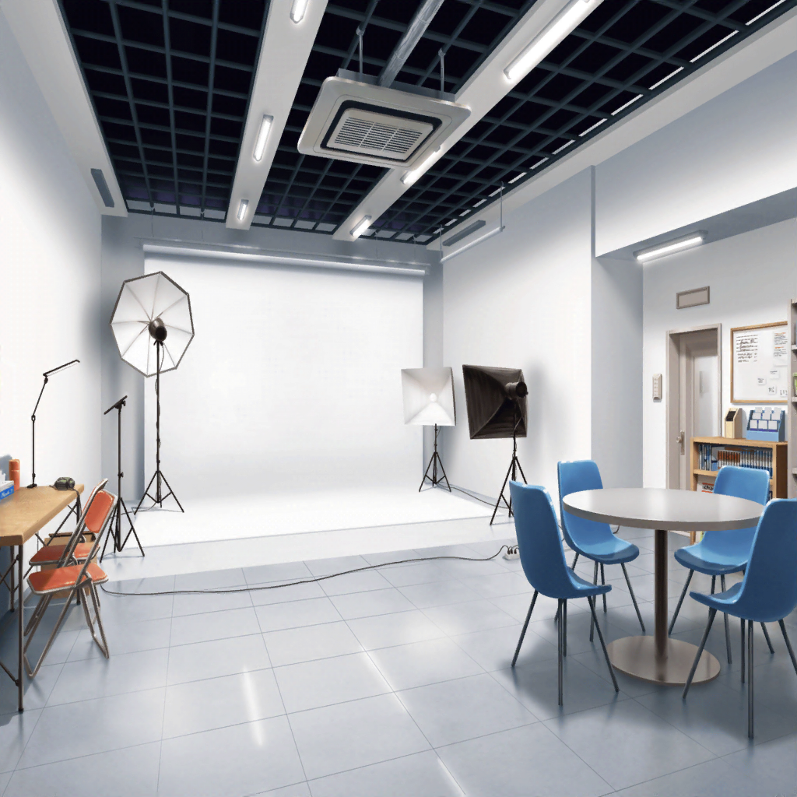

撮影現場
麻弥
では、ジブン達はこれで。
お疲れさまでした！
日菜
おつかれさまでーっす
麻弥
日菜さん、お疲れさまでした！
日菜
おつかれー。は〜。麻弥ちゃんといるのはラクでいいな〜
麻弥
あはは、そうですか？
そういえば、なんだかジブン達二人でのお仕事、
多くなってきましたよね
麻弥
おのずと日菜さんと過ごす時間も増えてきたというか……
日菜
そうかも。一人だと退屈だし、
麻弥ちゃんと一緒でホント助かるよ〜
イヴ
ヒナさーん！ マヤさーん！
日菜
お！ イヴちゃん！ お疲れ〜。
イヴちゃんもお仕事終わり？
イヴ
はいっ！ これから合同ライブの練習です！
お二人もですか？
麻弥
はい！
もしかして今日は、五人揃って練習できるんですかね？
日菜
んー、あたしはどうしようかな。このまま帰ろっかな
麻弥
あまり詰め込んだ状態でやっても意味ないですしね。
日菜さんは元々できる方ですし
イヴ
ヒナさん、今日は来ないんですか……
麻弥
イヴさん、そう気を落とさずに……みなさん、それぞれの
お仕事が増えていますし、無理しても意味ないですから
イヴ
それはわかっているんですが……やっぱり、寂しいです
日菜
あー、なんていうんだろ。あたしが帰ろっかなって
思ったのはさ、なんか最近つまんなくって
麻弥
それって、なかなか五人揃わないからですか？
日菜
うーん、そうなのかなあ？
わかんないんだよね
イヴ
みなさんと練習すれば、きっと楽しい気持ちになりますよ！
そうじゃないですか、ヒナさん！
麻弥
まあまあ、イヴさん……
あっ、千聖さんから連絡だ。
……千聖さんも、残念ながら今日は練習に来られないそうです
イヴ
そうなんですね……
日菜
やっぱりあたし、今日は帰るよ。モヤモヤーってしたまま
やっても楽しくないだろーし。それじゃあ、お疲れー
イヴ
あっ、ヒナさん！
……うう、残念です
麻弥
イヴさん！ ジブンは今日これから練習するつもりですし、
彩さんも来てくれるようですよ！ だからそんなに
がっかりしないでください！
麻弥
こういう日もあります。仕方ないですよ
イヴ
マヤさん……ありがとうございます。
すみません……
麻弥
さ、スタジオに行きましょうっ！

レッスンスタジオ
彩
イヴちゃん、麻弥ちゃん、おはようっ！
今日は三人でがんばろう！
麻弥
はい！
麻弥
……っと。キリがいいですし、少し休憩しますか
彩
ふう〜、おつかれ〜……
今、ちょっとだけ入りがうまくいった気がする
麻弥
そうですね、最初よりかなりキレイでしたよ！
もう少し千聖さんのベースを意識すると
よりうまく入れると思いますよ
彩
うんっ、ありがとう。麻弥ちゃんのアドバイス、
ホントに助かるよ〜……次はもっと意識してやってみよう
麻弥
はい！ きっと、練習を積み重ねていけば
もっとよくなっていくはずです！
彩
私ね、この間撮影とインタビューのお仕事があって。
そこで、どうすればあゆみさんを超えられるか、って
聞かれたんだけど、うまく答えられなくて……
彩
でも、今思ったよ。
やっぱり、努力の積み重ねなのかなって
彩
努力すれば、こうやってできることも増えていくんだよね
イヴ
うっ……アヤさん〜！！
彩
わっ！ イヴちゃん、どうしたの？
イヴ
アヤさんが、アヤさんで安心しました……
彩
えっ？ えっ！！？
イヴ
最近なかなかみなさんで集まれないのが、すごく寂しくて……
今日も、ヒナさんとチサトさんはいませんし……
イヴ
でも、アヤさんは五人揃わなくても、ずっとずーっと
変わらず一生懸命で……
イヴ
アヤさんが、アヤさんらしく練習しているのを見て、
なんだかカンキワマってしまいました
彩
……みんながんばってるんだもん。
私は、私がやれることを全力でやらなくちゃって思って
彩
それに個別のお仕事増えても、私達はパスパレだもん！
パスパレとして最高のライブを見てほしいし
麻弥
そうですね。
……うん！ 彩さんの言葉で、ジブンもやる気が湧いてきました
彩
よーっし！ 合同ライブのために、まだまだやるぞー！
イヴ・麻弥
おーっ！